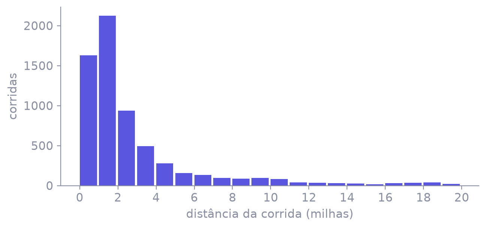
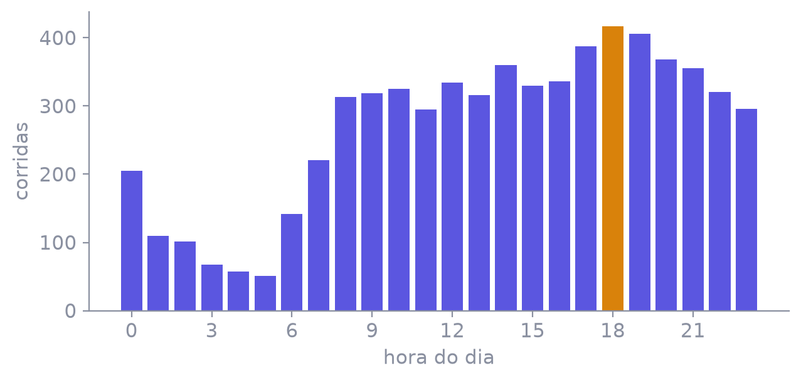
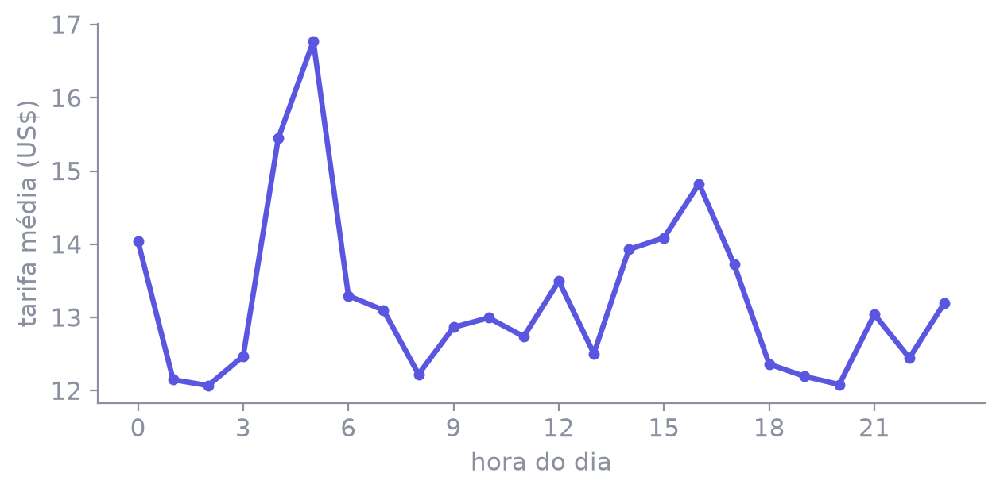

A biblioteca que faz contas com muitos números de uma vez
— hoje, com 6.433 corridas de táxi de Nova York
Uma biblioteca do Python que faz a conta em milhares de números de uma vez.
você repete a conta num laço, número por número
você escreve a conta uma vez, e ela vale para todos
import numpy as np
distancia = np.array([1.6, 0.8, 10.5]) # milhas rodadas
tarifa = np.array([7.0, 5.0, 33.0]) # dólares cobradosdistancia * 1.61
# milhas → kmtarifa.mean()
# 15.0 dólarestarifa[distancia > 10]
# [33.] — só a longaimport numpy as np, pandas as pd
df = pd.read_csv("dados/taxis.csv")
distancia = df["distance"].to_numpy()
tarifa = df["fare"].to_numpy()
gorjeta = df["tip"].to_numpy()O mesmo problema, dos dois jeitos
km = []
for d in distancia:
km.append(d * 1.60934)km = distancia * 1.60934total = 0
for t in tarifa:
total = total + ttotal = tarifa.sum()
# 84 214.87 dólaresdistancia.mean() # média
distancia.min() # menor
distancia.max() # maior
distancia.std() # desvio padrão
np.median(distancia) # medianalongas = []
for d in distancia:
if d > 10:
longas.append(d)longas = distancia[distancia > 10]longa_com_gorjeta = (distancia > 10) & (gorjeta > 0)
longa_com_gorjeta.sum() # 225 de 394 corridas longas& é "e" · | é "ou". Cada condição entre parênteses.
tipo = []
for d in distancia:
if d > 10:
tipo.append("longa")
else:
tipo.append("curta")tipo = np.where(distancia > 10,
"longa",
"curta")np.where é o if/else aplicado à lista inteira: teste, resposta para o sim, resposta para o não.
pago = []
for i in range(len(tarifa)):
pago.append(
tarifa[i] + gorjeta[i])pago = tarifa + gorjetapor_milha = tarifa / distancia
np.nanmedian(por_milha)
# 5.42 dólares por milhananmedian: ele ignora essas.
pct = gorjeta / tarifa * 100
np.median(pct[gorjeta > 0]) # 26.5% entre quem deu gorjetapct[gorjeta > 0] usa a máscara de uma coluna para selecionar em outra.
(distancia == 0).sum() # 51
limpa = np.where(
distancia == 0, # o teste
np.nan, # onde deu certo
distancia) # onde não deu
distancia.mean() # 3.02
np.nanmean(limpa) # 3.05np.nan é o "não sei"não é zero: é a marca de que ali não tem valornanmean = média pulando os nanexistem também nanmax, nanmin, nansumtarifa.max() # 150.0 o VALOR
tarifa.argmax() # 5364 a LINHA dele
# a linha 5364 é a mesma corrida
# em qualquer coluna:
distancia[5364] # 36.7 milhas
np.sort(tarifa)[-3:] # ordena e
# [143.5 150. 150.] # pega as 3 últimasarg… devolve posiçãomax responde quanto; argmax responde qual linhanp.arange(0, 10, 2) # [0 2 4 6 8]
np.zeros(5) # [0. 0. 0. 0. 0.]
rng = np.random.default_rng(42)
rng.normal(13, 5, 1000) # 1000 tarifas sorteadasO NumPy faz a conta · o Matplotlib só desenha
# bins = as bordas das faixas: 0, 1, 2 … 20
# (o 21 só marca o fim e não vira faixa)
alturas, faixas = np.histogram(distancia, bins=np.arange(0, 21, 1))
# alturas = quantas corridas caem em cada faixa
# faixas = as bordas — sempre uma a mais que as barras
plt.bar(faixas[:-1], alturas) # daí o [:-1]
hora = df["pickup"].dt.hour.to_numpy() # 0 a 23
# bincount = "contagem por caixa": conta quantas vezes
# cada número aparece — a posição 18 guarda as das 18h
por_hora = np.bincount(hora)
plt.bar(np.arange(24), por_hora)
np.bincount conta as repetições de cada número inteiro.
# hora == h marca as corridas daquela hora;
# .mean() tira a média só delas
media = np.array([tarifa[hora == h].mean() for h in range(24)])
plt.plot(np.arange(24), media) # x: 0 a 23 · y: a média
tarifa.sum()tarifa[distancia > 10].mean()np.where(distancia > 10, "longa", "curta")np.select([...], [...])tarifa / distancia > 20np.histogram(distancia)# o relatório de segunda-feira, em quatro linhas
faturamento = tarifa.sum() # 84 214.87 dólares
ticket = tarifa.mean() # 13.09 por corrida
longas = (distancia > 10).mean() * 100 # 6.1 % do total
suspeitas = (tarifa / distancia > 20).sum() # 34 para investigarVai abrir a janela de impressão do navegador. Confira estas três opções:
Cada slide vira uma página no formato 4:3. O PDF sai sempre no tema claro, para não gastar tinta se você imprimir em papel.